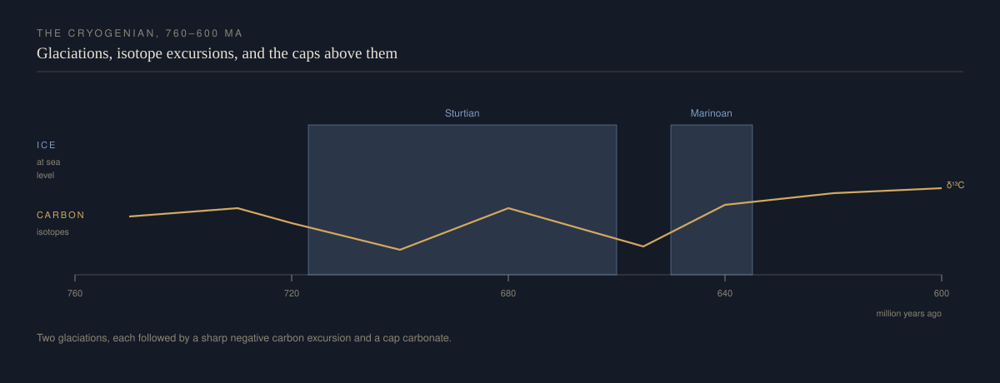

The evidence that forced the idea
Neoproterozoic rocks contain tillites — lithified glacial deposits — interbedded with rocks that only form in warm water. Some of those tillites sit in units whose palaeomagnetic signature places them within about 10° of the equator. Dropstones, striated pavements and varves appear at those latitudes. Ice sheets at sea level in the tropics is not a small claim, and it is the claim the rocks make.

Above the glacial deposits, almost everywhere the sequence is exposed, lies a distinctive dolostone — a “cap carbonate” — often with odd sedimentary structures and a strongly negative carbon-isotope signature just below it. The pattern repeats across continents and across two separate glaciations.
The mechanism
Ice reflects sunlight. More ice means a colder planet means more ice. Joseph Kirschvink, who coined the term in 1992, pointed out that this feedback has a runaway branch: once ice reaches about 30° latitude, the albedo change can carry it to the equator and the planet stops being able to melt itself.
Getting out requires the other half of the story. With the surface frozen, volcanic carbon dioxide has nowhere to go — no weathering, no photosynthesis — so it accumulates. Over millions of years it reaches the tens of thousands of parts per million needed to break the albedo, and the planet thaws in a geological instant. That is the same CO₂ that then forms the cap carbonates.
The hard part
Life survived, and it survived in a world with no open ocean for millions of years. Proposals include refugia around hydrothermal vents, thin-ice “slushball” states with open water at the equator, and a frozen but not globally sealed ocean. The debate is over how hard the snowball was, not whether the glaciations happened.
Documented: low-latitude glaciations in the Cryogenian, around 717–660 Ma (Sturtian) and 650–635 Ma (Marinoan), with cap carbonates above both.
Contested: whether the ocean was globally ice-covered (“hard snowball”) or had an open equatorial band (“slushball”).
Cause: the breakup of Rodinia, increased weathering and a drop in atmospheric CO₂ are the leading candidates for triggering it.
Consequence: the second glaciation is followed, within a few tens of millions of years, by the Ediacaran organisms and then the Cambrian explosion. Whether the freeze caused the animals is unresolved.
Why it belongs here
Because it is the counter-example the archive needs: a claim that sounded like catastrophism, was resisted for that reason, and then turned out to be written in the rock. The site collects hidden-world theories; this is what it looks like when one is true.
Sources for this page
- Wikipedia, “Snowball Earth” — evidence, timing and debateen.wikipedia.org
- Hoffman et al. (1998), Science — a Neoproterozoic snowball Earthdoi.org
- Wikipedia, “Cryogenian” — the period and its glaciationsen.wikipedia.org
- Wikipedia, “Cap carbonate” — the post-glacial dolostonesen.wikipedia.org
Cite this page
Momin, S. (2026). Snowball Earth. The Larger World Archive. https://drsamonline.github.io/LARGE_GLOBE/snowball-earth.htmlMomin, Sohil. “Snowball Earth.” The Larger World Archive, 2026, https://drsamonline.github.io/LARGE_GLOBE/snowball-earth.html.Momin, Sohil. “Snowball Earth.” The Larger World Archive, 2026. https://drsamonline.github.io/LARGE_GLOBE/snowball-earth.html.@misc{snowball2026snowball,
author = {Momin, Sohil},
title = {Snowball Earth},
year = {2026},
howpublished = {The Larger World Archive},
url = {https://drsamonline.github.io/LARGE_GLOBE/snowball-earth.html},
note = {Last reviewed 20 November 2026}
}Last reviewed 20 November 2026 · Corrections policy · this page is not peer reviewed